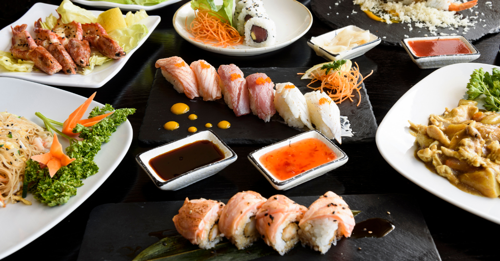

Descubre la Gastronomía de Alemania, París, Francia y Tokio, Japón
Alemania
Plato
Descripción
Bretzel
Clásico pan alemán en forma de lazo.
París, Francia
Plato
Descripción
Croissant
Hoja de masa hojaldrada, típica de la repostería francesa.
Tokio, Japón

Plato
Descripción
Sushi
Preparación de arroz acompañado de pescado crudo.